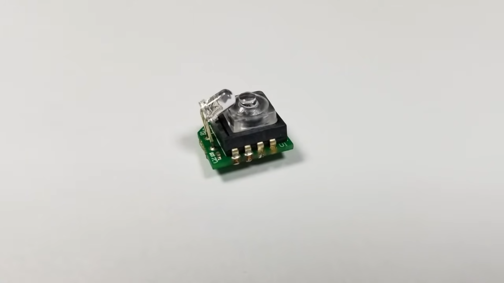
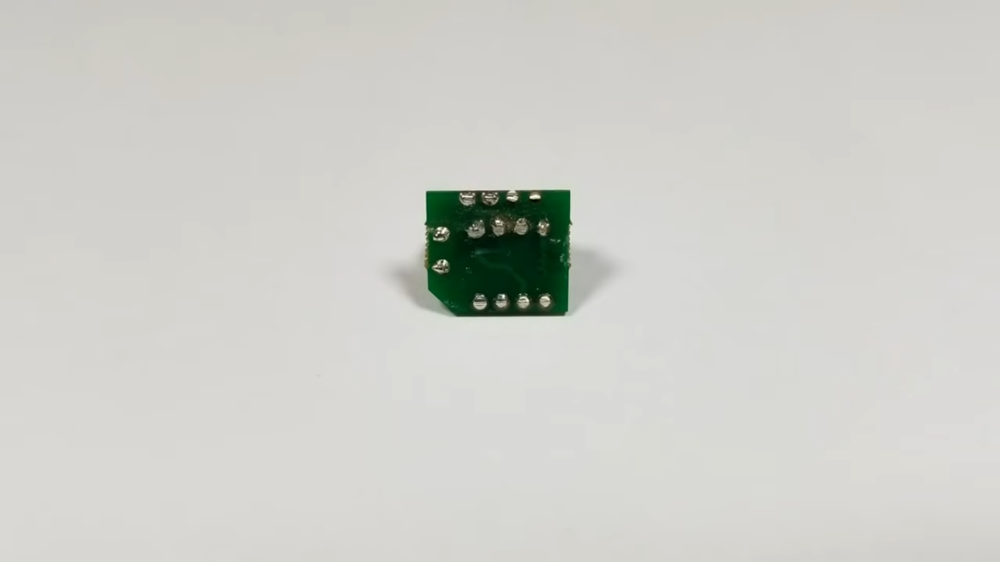
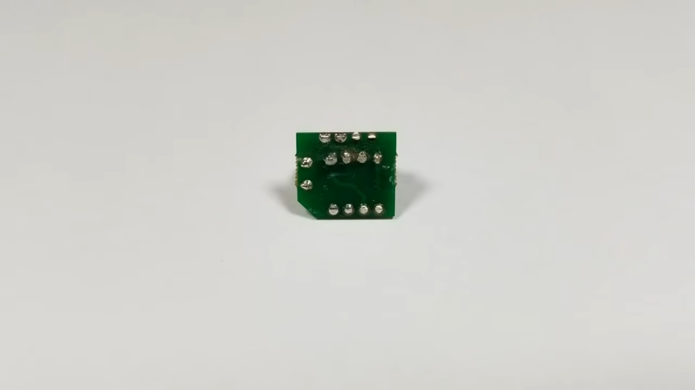
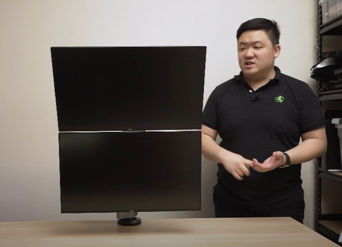
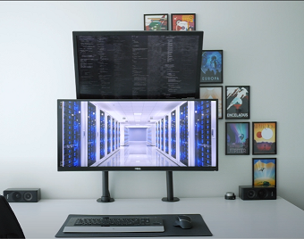
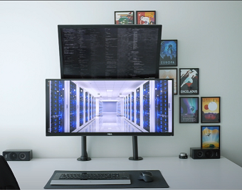

Design how to implement word typing properties in software
Properties based in word generation
From Andraelity, a relation with Me and WORDS
This is an article capable to sustain, the kind of elements we need to set in order to promote the construction of more details around the generation of words.

CONSTRUCTION OF WORDS one of the primary components we need to solve in this structure of the world is the ability of the people to communicate characteristics about reality, this reality is based as a conjuction of elements with logic and reasoning as its main driver, if you want to share a meaning or a idea with someone else you are forced to enable the construction of paths with language as its core ingredient, language as its primary subject, language as the unique model the human mind can access to fullfil its desire to obtain an objective, with this structure in mind, we realize our only option to subdue at its magnificent, by setting and approaching this kind of behavior as our pivot point of returning, enable us to keep iterating around this perpetual and limitless structure of reality. Setting the production of a positive and evolutive communication as the most important element in the person who is obligated to respond/answer to the objects where he is curretly inmerse.
By understanding the mind of our fellow men equal to everyone else, a mind where its only project is to produce the generation of more components the production of more elements capable to answer the questions we want to solve, the question we need to solve, the doubts to make the proper solution to each single iteration of live, learning how the mind can make langauge productions loaded with the main property to set more constructions, more path of creativity, more path of understandings and work, this only can happend if we stablish a past or a background where the production of this unavoidable property in life can occur, what i am trying to say is we need people to keep structuring and defining actions that enable the generation and perpetual motion of the language, of the psyche capable to produce sounds, the psyche capable to generate more ingredients in this tune we call existence, mentalities capable to dream with desires with objectives, setted as an unavoidable representation of ideas as communication.
What i propose is to slave people with dreams to be better, childs, students, workers and each single individual with the main purpose to became an anventurer of reality, make the people in our control to learn more ways to dreams, more objectives to set, a clear path of evolution, a clear path of psyche improvement, this pysche can be approximated as a entity with the only desire to play became by approaching perfection, learning that in this current timeline we are inmerse in a reality where language of symbols and sounds, define the wholeness of the human mind, learning that the objectives we want to trace are based completely as an unaboidable structure of sharing and lending ideas, I perceive everyone as my comrades and as my family and i want to make my comrades/slaves able to share and obtain more dreams more objectives more properties in their lifetime that make its life enjoyable and excited. By learning how to share their words in different languages, in different enviroments, sharing the perpetual understanding of the world as words; in an system where its impossible to elimate the necessity to name and describe things with symbols and sounds, like we write and talk, like we read and sing, like we think and create.
Visualize the creation of words in a controller enviroment.
I need to generate a component where the actions and the details of the world can be unified, as a relationship between words and software, keyboards and typing, hand and eye, mechanics and text production.
the continual promotion of the language we need to set and experience in each computer model, by setting more actions, by setting more productions, by generating the structures we need to compose, the actions in the teaching of the world, cuz this perception enable the representation of new ways to learn and maximize the continual production of more elements, sensing how to integrate more definitions, sensing what conversation is the new element in the world we need to approximate, what detail we need to approach in order to represent more models in our mind flow, express the ability to communicate more elements, the ability to share more dreams, structure bonds between persons, bonds in groups, set goals and approach the completeness of its behavior, what mentalities i can personalize in this field what i call my own understanding, if i want structure a way to behave, a way to describe more goals, a way to recreate more visions, a way to produce more connections between the words and the objects, the actions and the meanings, the drive and the conductor.
Using the production of connections between this idea of typing and sentence reading i can enable the representation of more qualities in software develepment where the key ingredients is to keep the people who is using the software to generate more typing properties, defining more ways to produce components where the unique option in this field is to set more missions, complete a set of clear goals that we can use in posteriori with the purpose to generate the abilites we need to set, the abilites we want to make them acquire, the users of our program, of our game, of our system, a very interesting field where action is the conductor of the ideas, where the actions users generate define what is the future they will approach, stablish a model needed to keep us learning more about the current world, learn what visions what histories i want to experience, what visions i need to generate, how to materialize ideas, what process i can validate in the world, what processes i can model in the current structure of the components, to increase the connectivity between the word typing ability i want to see in the world and the artistics vision i need to create by my current understanding of this field of work, achieve a enterprise where the users are the creators of the projects, where the players and the people who want to make a change in their life decide to describe the current components in the world by its own creation, simulating the representation of models, of idea models, of psychological perception of work, a new way to teach langauges, a new way to teach words, a new way to personalize how each player in the world decide to generate a change in their life capable to increase how their understanding is define, how each person decide to comprehend the differences between the narratives each particular language provide, using this expression of the divine to learn what changes life can provide to the user, who start to sense a motion of transformation, a motion of revelation, a motion where each single feeling describe cultural expression, learning that the man who is in charge of the experience of his own life, need to keep setting the work as its primary focus in his day to day motion, and sensing that by learning how to learn to create more language, they can provide the needed structure in this field loaded with the vision i need to promote, the vision i need to manifest, the vision we want to build in order to define more creativity, using the components work provide to the ones who start to use its gift, the ability to type really really really fast, and improve how the connectiosn are stablished, learning how to manipule the generation of words, in a controler enviroment, where the unique objective is to think talk and complety missions around the production of words, of ideas of meanings of actions, of visions, how to communicate the production of data.

Technology needed to produce the context where the vision can be sintetized.

 



The primary objective with this hardwawre is to make a faster communication with the hands and the keyboard, due to the necessity to use pointers as a primary way to generate actions in the computer this necesity to produce a new machine that allow you mechanise more powers in this field, a new way to mechanise more words in this field of work, the necessity to obtain the ability to work faster and smoother, thanks to the quality this kind of mouse provide to the users, and the main reason to approach this field with a new kind of mouse or pointer whatever you want to call it, is that this element make the user always be at launch time of a work, a user who is able to write faster and easiest as he want, also this hardware object, provide to the user a friendly and ergonimic ecosystem where the actions you want to implement with a regular mouse can be generated equal with this mouse, this kind of particularity make the present object something people can integrate in their workflows with the unique porpose to improve and level up the efficient of his work, a work that we expect it is in its higher percentage of wholeseness text, typing, and communication based actions. I promote the construction of a field where the main purpose of the player is to sustain the communication of the program he is interacting with, this idea based around the properties of the games to make relationships and variability that only can be sensed when the properties are already formulated, the unability to experience the beauty of the actions till the production is currently in deployment, till the production is seeted as with the condition of variables, what elements we can generate in order to create more powers, the power to understand the viariation of the coplexities, the varion of the fields, the variation of the tunes, the variation of the realities we need to express as symbols in order to keep growing and approaching more language psyches. This artifact provide us with the needed actions to promote the contiunal construction of more code, the continual construction of words, the continual construction of messages, the construction of more language tunes Learn how to represent more perceptions, learn how to manipule the present structure of the language as something you can practice by repetition of ideas. Learning how to interact with the matter in order to provide more representations, learning how to produce tunes loaded with mind intelligence genaration, a component based with the primary structure of developement of the ideas.
Crear un entorno el cual permita que los usuarios puedan represntar mejores ideas sobre el contenido que se puede producir cuando centramos todas las versiones en un formato donde el principal objecto es transformar al sujeto en una entidad capaz de procesar mejores acciones relacionadas con la produccion de codigo y lenguaje el cual le permita manifestar como los productos teoriocos se generan. esta teoria en base a la representacion de contenidos de caracter calificativo, los contenidos de caracter mental necesarios para producir esas activdades que queremos materializar, usar el movimiento de este artefacto con el unico motivo de alcanzar la velocidad que se quiere producir, la velocidad que se puede centrar, la velocidad que queremos lograr con tal de mejorar con tal de avanzar en el procesamiento del saber, logrando obtener esos movimientos capaces de determinar que apreciaciones se pueden generar. Debido a la constante neceseidad de producir la respuesta la vida la cual maximize la appreciacion que tu tienes de la misma, apreciando como suceden todos esos movimientos de caracter intelectual, reconociendo como se puede llevar la mente al grado que se quiere conducir, la mente que produce las propiedades que necesitas para lograr facilitar la generacion de mas contenido a razon de la construccion de palabras.
https://github.com/Andraelity/Wiki-1-U-03.git/tree/main/program/Abier2comp.m
 

Usando la mecanica de ordenacion sobre dos monitores de manera vertical nos es permitido orientar el desarrollo de juegos o software de diseño hacia un modelo especifico el cual tiene como proposito maximizar la eficiencia de los usuarios o jugadores que quieran interactuar con los programas que se interconectan en busca de maximizar la velocidad de escritura/ typing de diferentes lenguages, tales como son los de caracter programatico como los linguisticos, logrando que las propiedades que queremos formular puedan encontrar el proceso que buscamos sintetizar, analizando como las rutas del entendimiento en miras de la velocidad del pensar se ven beneficiadas cuando se amplifican los modelos que ahora existen con tal de lograr una mayor reactivilidad entre las partes, entre los distintos elementos de software que estamos buscando cuando interactuamos con sus complejidades, con sus sitemas, aprendiendo como las representaciones pueden formular caminos los cuales poder responder, los caminos los cuales poder mejorar con tal de utilizar las cualidades inherentes de su comportamiento en miras del procesamiento de una entidad centrada completamente en la generacion de conexiones las cuales implementar, las conexiones las cuales responder con tal de asimilar como los caminos se piensan, como los modelos de la realidad se estructuran en miras de una entramada red de trabajos y fuerzas que activan al mismo tiempo que actuan en la construccion del individuo, esas mociones que nos direccionan completamente hacia la generacion de nuevas propiedades donde la capacidad de moverse entre distintos universos virtuales promueve la representacion de nuevas formas las cuales utilizar con tal de representar los movimientos de la mente en pro de la construccion de una vision la cual hacer realidad, ser capaces de generar una producccion de palabras la cual fomentar en busca de la modulacion de nuevos elementos de caracter narrativo en la experiencia de cada usuario por el simple hecho de maximizar como las funciones comunicativas se presentan, estas funciones basadas en la constante representacion de ideas y modelos intelectuales descritos en un entorno simbolico.
Describiendo como las funciones interactivas se construyen a medida que se implementan nuevas actividades sobre la existencia de estos programas, la capacidad de unificar los modelos de juego en un entorno en el cual podamos mejorar como se presentan las interacciones ese modelo personal el cual nos permita seguir implementando nuevas rutas sobre el saber, estas rutas necesarias para procesar mejores experiencias. es necesario el uso de multiples pantallas ya que se quiere crear un universo de lenguaje el cual permita la descripcion de mociones estructuradas en torno al incremento de puntos y abilidades sobre el entorno de juego que se este pensando, detallando con ello como las actividades se presentan como los modelos activos del saber se construyen, representando mas visiones sobre el modelo que se quiere trabajar, sobre el modelo que buscamos detallar, movimientos de caracter calificativo unificados en torno a la completa descripcion de las partes, un modelo intelectual el cual busca formalizar el desarrollo de nuevas estructuras procesativas donde el unico proposito es mantener el constante uso de los movimientos de mensajes, que se producen en todas las areas de procesamiento, este modelo intelectual ubicado en un mundo virtual, el cual fomenta la generacion de procesos, un modelo intelectual el cual distribuye todos sus activos sobre un campo de trabajo mas determinante, un ecosistema de pensamiento completamente caracteristico, donde la unica propiedad que se quiere fomentar es la generacion de actividades de caracter narrativo, donde la unica actividad que se desea procesar es esa expresion que produce cualidad en torno a las propiedades del habla y del escrito. Maximizando con ello las relaciones en el ahora capaces de construir procesos que puedan orientar como las formulas del tecleo se presentan como las formulas de produccion teorica hayan estructura en la constante practica del saber, en la constante formulacion de los procesos analiticos, en la constante diferenciacion de las rutas armonicas del presente, las rutas armonicas de la totalidad cargadas con los modelos que se quieren procesar los modelos que se quieren definir, los modelos que nos permiten concebir mas acciones, en busqueda de la constante participacion inherente de los sujetos que quieren pertenecer a un constructo social mas determinante, un constructo intelectual mas claro sobre la construccion del trabajo, aprendiendo a representar visiones sobre la expresion que se desea alimentar, la expresion que se desea producir, atendiendo a todo momento a la maximizacion de las abilidades de juego, las abilidades de trabajo, las abilidades de ordenamiento, las abilidades en el entendimiento de estos procesos de software, de mecanica de juego, de mecanica de aprendizaje, logrando gracias a esto una coherente busqueda de los propositos que se deseen alcanzar, ya que se sostiene de manera inevitable el entorno que produce comunicacion activa y positiva sobre las partes involucradas, debido a la perpetua practica de mensajes en torno a la obtencion de objetivos, ya que se fomenta la construccion de la mision principal de la personas el crecimiento intelectual.
Si ordenamos las propiedades de tal forma que se activen los contenidos antes mencionados lograremos que los individuos generen una actividad practica centrada en la modulacion y vision y exponenciacion de misterios centrados en la creacion de cultura, en la creacion de propiedades sistemicas, con el unico proposito de la maximizacion del contenido en produccion, con el unico objetivo de lograr generar una respuesta analitica sobre el lenguage que se conoce por experiencia propia se puede lograr, se puede comunicar y expresar, es una combinacion de pantallas en miras de la produccion de mas propositos, unir los elementos de trabajo en busqueda de una idea a alcanzar, una idea a producir, una idea a orientar, una idea necesaria para ubicar las sensaciones de los involucrados siempre hacia la determinacion de sus entendimientos. Ya que las pantallas promueven la construccion de mas entidades de software de caracter gamificante, entidades de software de carater practico, generando con ello nuevas rutas interactivas, generando con ello nuevas rutas practicas sobre el modelo, generando propiedades las cuales mejorar a medida que centramos la edificacion de coherencias sobre la estructura que se desea aplicar, mejorando como las relaciones de poder se producen al momento de enfrentar las partes hacia si mismas, como las relaciones interactivas de los movimientos de los sujetos entran a participar en la definicion de procesos, ser capaces de jugar a crear y crear todo lo que nos sea permitido, creando y formulando, pensando y detallando, activando y concentrando todas las mociones en torno a la edificacion de los procesos de entendimiento.
Unicamente es necesario el uso de las actividades programativas, necearias para que se puedan analizar los contenidos de este presente en pro del procesamiento psicologico de propiedades que te permitan generar mas entendimiento sobre como el movimiento de las verdades sucede, activando las partes que pertenecen a la generacion de nuevas relaciones de caracter gamificante, generando las propiedades que te ayudan a visualizar los contenidos que se presentan ahora mismo, en forma de cultura, en forma de trabajo, en forma de velocidad, aprendiendo a ser mas preciso en la generacion de experiencias, en la generacion de movimientos practicos de talla mecanizante, de talla comando, buscando generar la expresion que te permite formular mas sobre los contenidos que quieres aprender sobre los contenidos que se quieren procesar, las relaciones interactivas que buscamos entender, esa propiedad de la realidad que define como los sistemas se crean, como los entornos de trabajo de producen, activando la generacion de propiedades, ser capaces de coordinar rutas interactivas, ser capaces de coordinar rutas practicas, ser capaces de formalizar las relaciones del entendimiento, coordinando como las formulas algoritmicas se procesan, entendiendo que los motivos de produccion sobre pantallas ayudan a que las relaciones de codigo puedan encontrar funcion, y ejecucion sobre una estructura mas practica, entendiendo yo como sujeto capaz de jugar, y con esto atender a la mecanica de crecimiento las partes que producen el significado ya que unicamente con el perpetuo perfeccionamiento del ecosistema se nos puede permitir mejorar como las actividades se generan, como las rutas de trabajo se pueden coordinar en pro de la generacion de nuevas muestras interactivas, utilizando mejores sucesos, utilizando mejores practicas, aprendiendo como yo puedo producir mejores actividades, como yo analizo he interctuo con la materia, gracias a la utilizacion de repuestas interactivas sobre la logica del lenguaje, gracias a la utilizacion de componentes capaces de resolver la necesidad de sostener el trabajo y las actividades que se continuan construyendo, activando como las misiones de este modelo participan en la generacion de mejores practicas, las misiones que nos permiten responder eficientemente a la teoria que se quiere diseñar, a la teoria que se quiere potenciar, lograr que las personas mantengan una velocidad de escritura y de asimilacion de ideas altamente construida. Recreando mejores configuraciones sobre la totalidad de juego que se continua aprendiendo, como puedo organizar los formatos que se presentan en mi vida en torno a la participacion constante de las interacciones en pro de la presentacion de actitudes, en pro de la construccion de formatos de caracter interactivo, la definicion de modelos que produzcan la generacion de mejores propiedades de mejores formulas que maximicen como se pueden apreciar las relaciones de rendimiento de esta estructura que estamos planeando, de esta estructura que buscamos sintetizar en forma de procesamiento teorico, practico y linguistico.
https://github.com/Andraelity/Wiki-1-U-03.git/tree/main/program/Abier3comp.m

https://github.com/Andraelity/Wiki-1-U-03.git/tree/main/program/Abierta3Comp.m

https://github.com/Andraelity/Wiki-1-U-03.git/tree/main/program/booleCom.m

https://github.com/Andraelity/Wiki-1-U-03.git/tree/main/program/Boolecomp.m

https://github.com/Andraelity/Wiki-1-U-03.git/tree/main/program/Grado_de_precision.m

https://github.com/Andraelity/Wiki-1-U-03.git/tree/main/program/impropias.m

https://github.com/Andraelity/Wiki-1-U-03.git/tree/main/program/legendreProve.py

https://github.com/Andraelity/Wiki-1-U-03.git/tree/main/program/MN.py

https://github.com/Andraelity/Wiki-1-U-03.git/tree/main/program/PuntoMedioCompu.m

https://github.com/Andraelity/Wiki-1-U-03.git/tree/main/program/simp38.m

https://github.com/Andraelity/Wiki-1-U-03.git/tree/main/program/Solucion.py

https://github.com/Andraelity/Wiki-1-U-03.git/tree/main/program/textStart.txt

https://github.com/Andraelity/Wiki-1-U-03.git/tree/main/program/Todo_de_Integrales_Impropias.m
 -->
-->